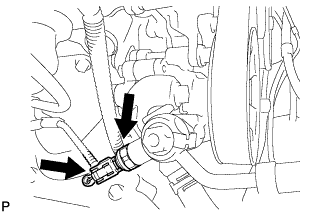

POWER STEERING OIL PRESSURE SWITCH > INSTALLATION |
| 1. INSTALL POWER STEERING OIL PRESSURE SWITCH |
Install a new O-ring to the oil pressure switch.
Apply a light coat of engine oil to the O-ring of the oil pressure switch.
 |
Using a 19 mm deep socket wrench, install the oil pressure switch.
Connect the oil pressure switch connector.
| 2. INSTALL FAN AND GENERATOR V BELT |
 |
While turning the belt tensioner counterclockwise, align the holes, and then insert a bar of φ6 mm (0.236 in.) into the holes to fix the belt tensioner in place.
Install the fan and generator V belt.
 |
While turning the belt tensioner counterclockwise, remove the bar.
| 3. INSTALL NO. 2 AIR CLEANER HOSE |
 |
Align the protrusion of the pre-cleaner with the groove of the No. 2 air cleaner hose as shown in the illustration.
 |
Tighten the 2 hose clamps.
| 4. ADD POWER STEERING FLUID |
| 5. INSPECT FOR POWER STEERING FLUID LEAK |
| 6. BLEED POWER STEERING FLUID |
Check the fluid level.
Jack up the front of the vehicle and support it with stands.
Turn the steering wheel.
With the engine stopped, turn the wheel slowly from lock to lock several times.
Lower the vehicle.
Start the engine.
Idle the engine for a few minutes.
Turn the steering wheel.
With the engine idling, turn the wheel left or right to the full lock position and keep it there for 2 to 3 seconds, then turn the wheel to the opposite full lock position and keep it there for 2 to 3 seconds. *1
Repeat *1 several times.
Stop the engine.
 |
Check for foaming or emulsification.
If the system has to be bled twice because of foaming or emulsification, check for fluid leaks in the system.
Check the fluid level.
| 7. INSTALL NO. 1 ENGINE UNDER COVER SUB-ASSEMBLY |
Install the engine under cover with the 10 bolts.
| 8. INSTALL FRONT FENDER SPLASH SHIELD SUB-ASSEMBLY LH |
 |
Push in the clip indicated by the arrow in the illustration to install the fender splash shield.
Install the 3 bolts and screw.
| 9. INSTALL FRONT FENDER SPLASH SHIELD SUB-ASSEMBLY RH |
| 10. INSTALL V-BANK COVER |
 |
Install the V-bank cover with the 2 nuts.